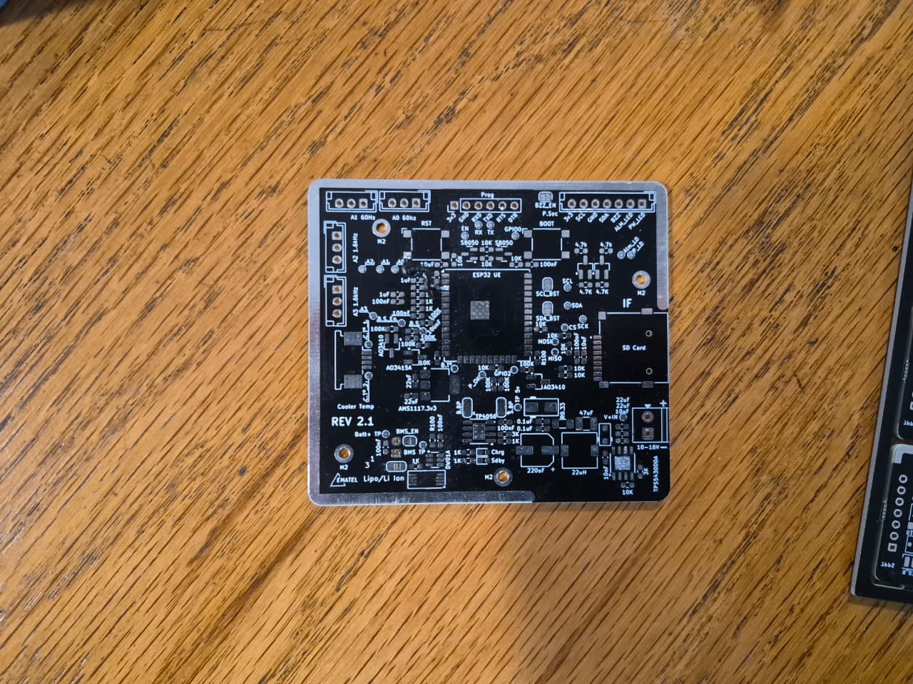

02
Proyectos Profesionales
U1 · SUE
SUE: Sensor Universal Ematel
Precursor de SAE
Primera versión de un sensor IoT multipropósito con ESP32. Con él aprendí qué funciones hacían falta de verdad, y eso definió el enfoque de SAE.



| MCU | ESP32 |
| Interfaz de usuario | Pantalla, buzzer y LEDs de estado |
| Almacenamiento | Tarjeta SD |
| Entradas | AHT20, BMP280 y puertos analógicos de propósito general |
| Resultado | Resultó demasiado complejo para el uso real, así que SAE partió de cero con foco en simplicidad y costo. Los ensamblé a mano. |
KiCadESP32PantallaBuzzerSDMultipropósito
U2 · SAE
SAE: Sensor Ambiental Ematel
Llegó a preproducción
SAE nace de SUE, pero en vez de un sensor multipropósito busca ser simple, barato y fácil de instalar para monitoreo ambiental y cadena de frío. Lo desarrollé para Ematel y llegó a preproducción con el hardware validado, en su tercera revisión mayor.
v0.1
Prueba de concepto
Dejé de lado las funciones extra de SUE para priorizar simplicidad, bajo costo y facilidad de instalación. Placas ensambladas a mano.


v1.1
Rediseño a 4 capas
Diseño más ordenado que el de la v0.1. Estuvo más de 3 meses en funcionamiento sin fallos. Es la primera revisión que ensambló JLCPCB.


v2.0
Cambio a STM32
Pasa de un solo ESP32-C3 a un STM32 como MCU principal, y el C3 queda solo como módulo de comunicaciones precertificado. 4 capas, diseñada para una carcasa comercial fabricada en China. La PCB se ensambló en China para montarla después con la caja en Chile.


KiCadESP32-C3STM324 capasBajo costoJLCPCB